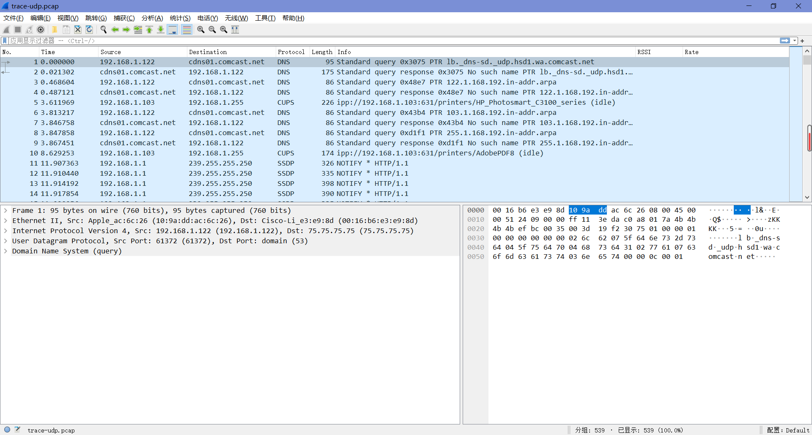
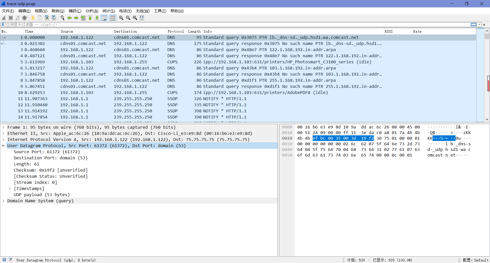
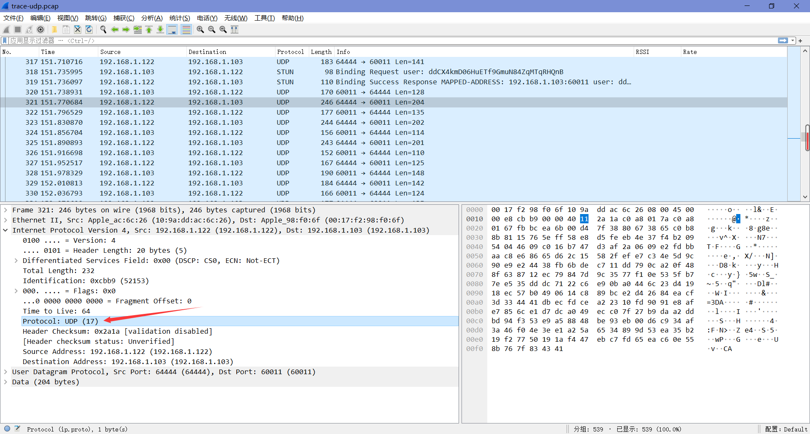
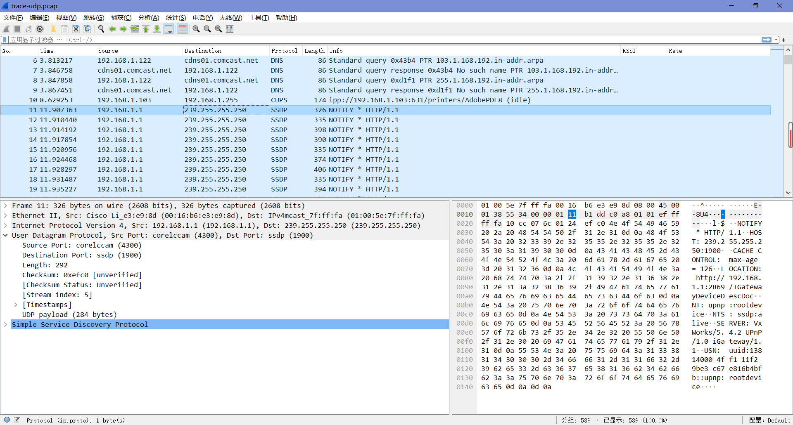

lab6-2 Wireshark-UDP
Lab6-2 UDP
1 Objective
查看UDP(用户数据报协议)的详细信息。UDP是在Internet上使用的一种传输协议，在不需要可靠性时作为TCP的替代方案。
2 Steps
Step 1: Capture a Trace
跟上个实验一样，实验手册中提供了本实验的抓包结果，可以直接点击链接下载。

Step 2: Inspect the Trace
任选一个协议列为DNS的从服务端下载到本机的长数据包，查看其UDP协议层的详细信息。

我们可以看到以下字段（我们只讨论通过网络传输的字段）：
- “Source Port”和”Destination Port”分别是UDP消息发送的端口号和UDP消息目的地的端口号。端口是UDP中唯一的寻址形式。
- “Length”给出了UDP消息的长度。
- “Checksum”是用于验证消息内容的消息校验和。
Step 3: UDP Message Structure
| IP header | Source Port | Destination Port | Length | Checksum | UDP payload |
|---|---|---|---|---|---|
| 2 bytes | 2 bytes | 2 bytes | 2 bytes | ||
| UDP header(8 bytes) | ~ | ~ | ~ |
1. What does the Length field include? The UDP payload, UDP payload and UDP header, or UDP payload, UDP header, and lower layer headers?
Length字段给出了UDP有效负载字节加上UDP报头的长度。
2. How long in bits is the UDP checksum?
校验和是16位长。
3. How long in bytes is the entire UDP header?
UDP头长度为8字节。
Step 4: UDP Usage
为了加深我们对UDP的理解，我们将看看UDP在应用程序中作为一种传输协议是如何被实际使用的。
我们可以考虑几个问题，第一个问题是IP如何知道下一个更高的协议层是UDP，答案是在IP报头中有一个Protocol字段，它包含这个信息。
Q: Give the value of the IP Protocol field that identifies the upper layer protocol as UDP.
A：如下图，“IP Protocol”字段值为17表示UDP。

第二个问题是UDP消息通常如何在IP层寻址。我们可以发现一个神奇的事情，就是UDP消息既不来自于本地计算机，也不是只发送到本地计算机，我们可以通过对Source和Destination列进行排序来查看这一点。这种情况的原因是UDP被广泛用作系统协议的一部分，这些协议经常使用广播和多播地址向所有对它们感兴趣的本地计算机发送消息。
Q: Examine the UDP messages and give the destination IP addresses that are used when your computer is neither the source IP address nor the destination IP address. (If you have only your computer as the source or destination IP address then you may use the supplied trace.)
A：如下图，此时目标IP地址为239.255.255.250。

Q: What is the typical size of UDP messages in your trace?
我们依次查看各个数据包的UDP信息长度可以发现，这个答案会随着追踪变化。它们通常在100~200个字节之间。